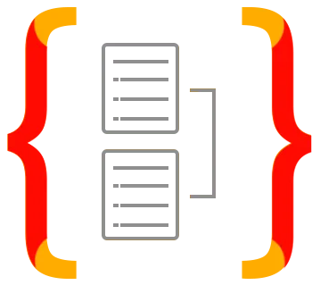
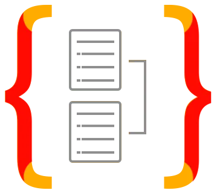

Étudiant en 3e et dernière année de BUT informatique à l'IUT Clermont Auvergne, je suis actuellement en alternance chez Satel en tant que développeur web sur le site de Vichy. Cette année d'alternance a été pour moi une opportunité de mettre en pratique les compétences acquises durant mes deux premières années d'études. J'ai pu travailler sur des projets concrets et collaborer avec des professionnels du métier plus expérimentés que moi. J'ai également pu découvrir le monde de l'entreprise et ses contraintes.
Je me suis orienté vers le développement web car j'aime le côté créatif et le fait de pouvoir voir le résultat de son travail en direct. Je souhaite continuer dans cette voie et me spécialiser dans le développement web en intégrant un Mastère développeur web Full Stack en alternance (2 ans) conférant le titre RCNP de niveau 7 équivalent à Bac+5. Ce parcours me permettra d'acquérir de nouvelles compétences et de me perfectionner dans le développement web, tout en continuant à travailler en entreprise. J'aurais la possibilité de passer deux certifications par an reconnues par l'État. Ces certifications sont un gage de qualité et de sérieux pour les entreprises. Ces certifications me permettront de me spécialiser dans des domaines très intéressants comme l'IA ou la cyber-sécurité par exemple qui font partie des domaines les plus recherchés par les entreprises et qui constituent l'avenir du numérique.
Comme vous l'aurez compris, je suis passionné par le développement web et je suis toujours à la recherche de nouvelles technologies et de nouveaux langages de programmation à apprendre. C'est pourquoi j'ai conçu ce portfolio pour vous présenter mes compétences et mes projets.
N'hésitez pas à me contacter si vous avez des questions ou si vous souhaitez collaborer avec moi.
Bonne visite !
 Typescript
Typescript
 Python
PHP
Bash
SQL
C/C++/C#
Python
PHP
Bash
SQL
C/C++/C#
 Java
Java
 Kotlin
Kotlin
 NestJS
 TypeORM
Node.js
React
Symfony
Django
Streamlit
NestJS
 TypeORM
Node.js
React
Symfony
Django
Streamlit
 MongoDB
SQLite
MongoDB
SQLite
 Jenkins
GitHub Actions
GitLab CI/CD
Jenkins
GitHub Actions
GitLab CI/CD
Projet de 3e année de BUT informatique réalisé par 5 étudiants.
Application web reprenant le concept de deux applications connues : Kahoot et Quizzlet.
La première partie de l'appli est dédiée à la création de flashcards pour réviser (Quizzlet).
La deuxième est dédiée à la création de quiz pour jouer avec ses amis en temps réel (Kahoot).
La partie quiz en temps réel a été développée avec Socket.IO.
L'application AnswerZ n'est disponible qu'en local pour le moment.


Projet de 3e année de BUT informatique réalisé par 5 étudiants.
Application web permettant de jouer à une machine à sous en ligne.
La partie animation de la machine a été réalisée en JavaScript grâce à ce repository :
lien.
D'autres jeux comme la roulette ou le blackjack avaient été prévus pour la suite.
L'application MaxWin n'est disponible qu'en local.


Projet de 3e année de BUT informatique que j'ai réalisé seul.
Application web de traitements d'images développée à l'aide du framework Django qui comporte de 8 fonctionnalités différentes :
Importation d'images, conversion en noir et blanc, application de niveaux de gris, redimensionnement,
alignement horizontal, alignement vertical, fusion d'images et animation d'images.
Le projet Image, Son et Visualisation n'est disponible qu'en local.


Projet de 3e année de BUT informatique réalisé par 2 étudiants.
Application web en Angular pour créer des burgers personnalisés.
Choisissez parmi des ingrédients préenregistrés et ajoutez ou modifiez à votre guise.
Consultez vos créations dans une liste de recettes.
Commandez pour passer une recette dans une liste de commandes en cours.
L'application MyBigBurger est uniquement disponible en local.


 Gmail
Gmail